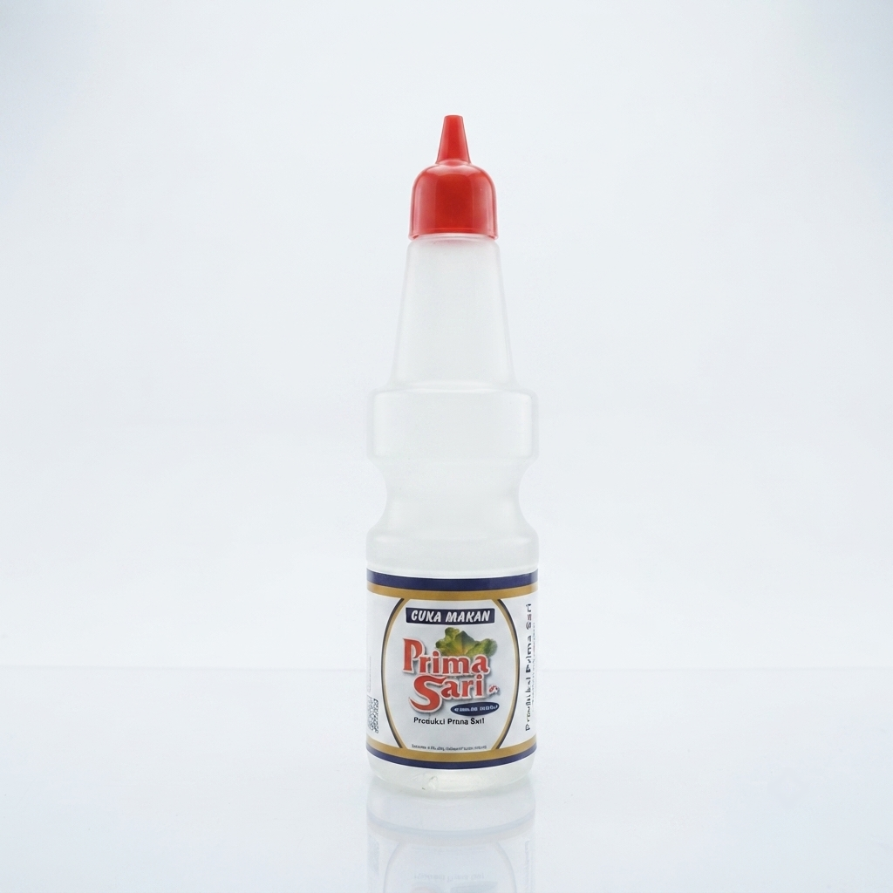

Temukan produk kecap, saus sambal dan cuka berkualitas tinggi untuk mendukung kebutuhan pasokan katering, grosir, dan usaha kuliner Anda.

Kecap manis fermentasi alami kedelai hitam dengan nira kelapa murni, menghasilkan rasa manis gurih medok kemasan 625 ml.

Rasa manis gurih karamel khas Primasari Hijau dalam kemasan botol sedang 360 ml yang praktis untuk katering.

Kecap manis aromatik dengan cita rasa tradisional yang mantap dan ekonomis untuk bisnis kuliner Horeka.

Kemasan jerigen bulk besar 6 kg ekonomis untuk konsistensi masakan industri kuliner dan pasokan grosir tonase tinggi.

Kecap manis premium hasil fermentasi alami kedelai hitam pilihan dengan nira murni, bercita rasa manis gurih legit kemasan botol 625 ml.

Kemasan jerigen bulk besar 6 kg kualitas premium untuk menjamin konsistensi rasa mewah masakan di industri kuliner dan katering skala besar.

Saus sambal pedas nikmat terbuat dari cabai merah segar lokal dan bawang putih murni dalam kemasan botol 625 gr.

Saus sambal kemasan pouch hemat 550 gr dengan rasa pedas-asam-gurih seimbang dari bahan cabai segar.

Saus sambal dengan campuran ketela pilihan untuk tekstur kental stabil, sangat ekonomis bagi katering masal.

Cuka pangan murni kemasan kecil 80 ml yang praktis and jernih, pas untuk penyediaan di meja saji rumah makan.

Cuka pangan murni kemasan botol sedang 210 ml untuk kebutuhan dapur katering, pembuatan acar, jernih tanpa endapan.

Cuka pangan murni kemasan botol besar 625 ml, sangat ekonomis untuk pengolahan industri makanan skala besar.
Deskripsi lengkap produk.
Saran aplikasi komersial.